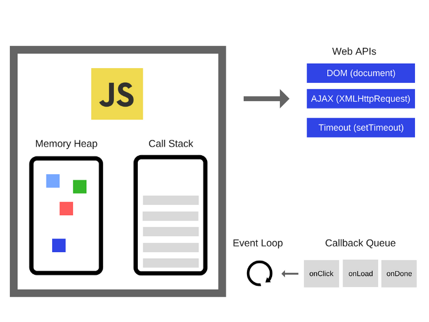

Javascript
Javascript is used by programmers across the world to create dynamic
and interactive web content like applications and browsers
Javascript engine
The JavaScript Engine is generally used for interpreting the JavaScript.
It is used to interpret the javascript and execute the javscript on the web page.
What is execution in js
JavaScript engine executes the code line by line, assigns the values to variables, and executes the function calls
Run time environment
The JavaScript runtime environment provides access to built-in libraries and
objects that are available
to a program so that it can interact with the outside world and make the code work

browser has following elements:
- JavaScript engine
- Web APIs
- callback queue
- event loop
heap
that is used for the allocation of objects and variables
call stack
The call stack is a data structure that keeps track of where we are in the program and runs in a last-in, first-out way.
Web APIs
Web APIs are not a part of the JavaScript engine,
but they are part of the runtime environment provided by the browser
callback queue
The callback queue stores the callback functions sent from the Web APIs in the order in which they were added.
event loop
The job of the event loop is to constantly monitor the state of the call stack and the callback queue
Working
- The runtime environment is what makes JavaScript code work, and in a browser in consists of the JS engine,
a lot of Web APIs, a callback queue and the event loop
- The JS engine translates source code into machine code that allows a computer
to perform specific tasks at the hardware level
- Web APIs extend the JS language and push callback functions to the callback queue once actions
are complete and data has been received
- The callback queue stores callback functions in order, ready to be executed
- The event loop is constantly monitoring the call stack and the callback queue;
if the call stack is empty it will move the callback function at the front of the queue
to the call stack, scheduling it for execution